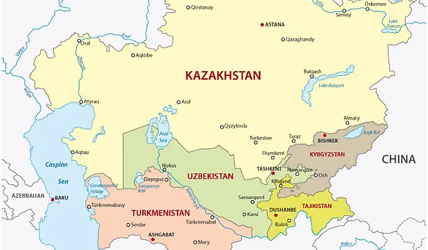

Explore Central Asia
Discover traditional foods and cultural connections from Kazakhstan, Kyrgyzstan, Turkmenistan, and Uzbekistan.
Sign in to access our Firebase-backed Explore Foods page and choose a country and discover its traditional dishes.

Start Exploring
Learn about traditional foods from Kazakhstan, Kyrgyzstan, Turkmenistan, and Uzbekistan. Select a country and then choose a dish to discover its ingredients and cultural significance. Account sign-in is required for the interactive explorer and contact submissions.
Explore Traditional FoodsProject 5: Powered by Firebase
Create an account or sign in to explore foods loaded from Cloud Firestore, then send feedback that's safely stored in the database.